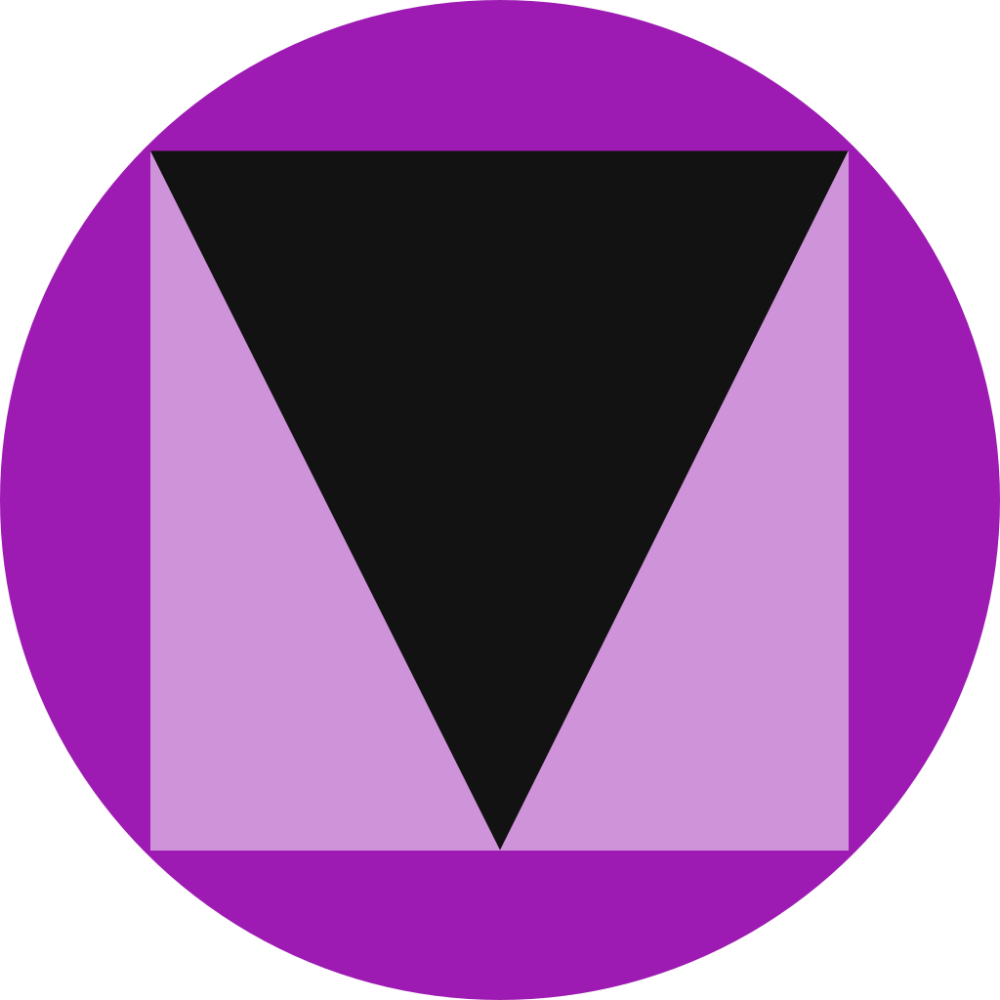

<div class="settings ml-2 mb-2">
  <p-button type="button" class="p-mr-2" (click)="visibleSidebar1 = true" icon="pi pi-cog"></p-button>
</div>

<p-sidebar [(visible)]="visibleSidebar1" [baseZIndex]="10000">
  <div class="card">
    <div class="card-container flex align-items-center justify-content-end">

      <div class="flex flex row justify-content-between align-items-center w-full">
        <h3>Tema</h3>

        <p-selectButton [options]="stateOptions" [(ngModel)]="obscuro" optionLabel="label" optionValue="value" (onOptionClick)="changeTheme($event)">

          <ng-template let-item>
            <i [class]="item.icon"></i>
          </ng-template>

        </p-selectButton>

      </div>

    </div>
    <div class="flex flex row justify-content-between align-items-center w-full">

      <h3>Otros temas</h3>

    </div>

    <div class="flex flex row justify-content-between align-items-center w-full">
      <a (click)="otherThemes('arya-blue')" class="cursor-pointer">
        
      </a>
      <a (click)="otherThemes('bootstrap4-light-purple')" class="cursor-pointer">
        

      </a>
      <a (click)="otherThemes('md-dark-deeppurple')" class="cursor-pointer">
        

      </a>

    </div>


  </div>
  </p-sidebar>


